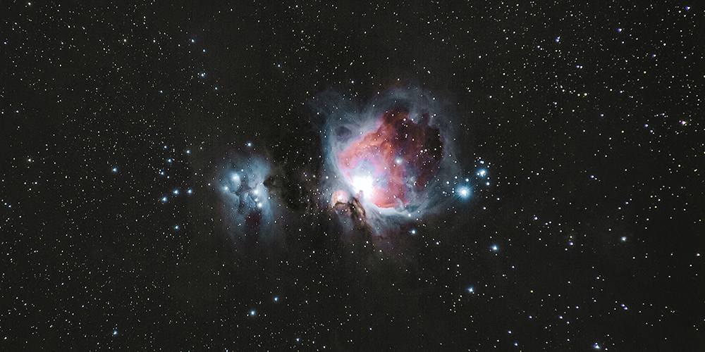

Orion Nebula
The Orion Nebula is one of the most scrutinized and photographed objects in the night sky and is among the most intensely studied celestial features. The nebula has revealed much about the process of how stars and planetary systems are formed from collapsing clouds of gas and dust. Astronomers have directly observed protoplanetary disks and brown dwarfs within the nebula, intense and turbulent motions of the gas, and the photo-ionizing effects of massive nearby stars in the nebula.